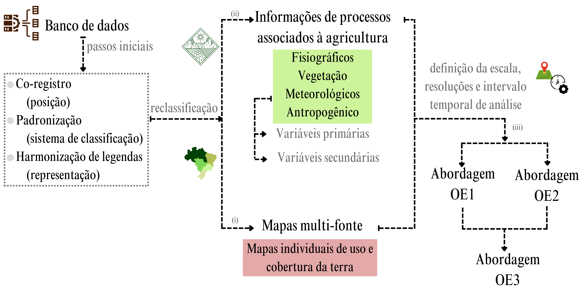

O objetivo da pesquisa é tornar mais assertivos os produtos cartográficos oriundos de mapeamentos de cultivos agrícolas por Sensoriamento Remoto existentes no Brasil, contribuindo para a diminuição das dissimilaridades entre as áreas e classes agrícolas no espaço-tempo, auxiliando a tomada de decisão no monitoramento agrícola e suas aplicações (estimativa de área, produtividade, sustentabilidade, mudanças de uso, outros). Em seu desenvolvimento, a pesquisa conta com abordagens espaço-temporais que envolvem a integração de dados/produtos multifonte (EO1), análise de mudanças e dissimilaridades nas áreas/classes agrícolas (EO2) e a modelagem probabilística de incertezas (EO3) no mapeamento de áreas agrícolas no Brasil por Sensoriamento Remoto, tendo como foco os cultivos agrícolas anuais.